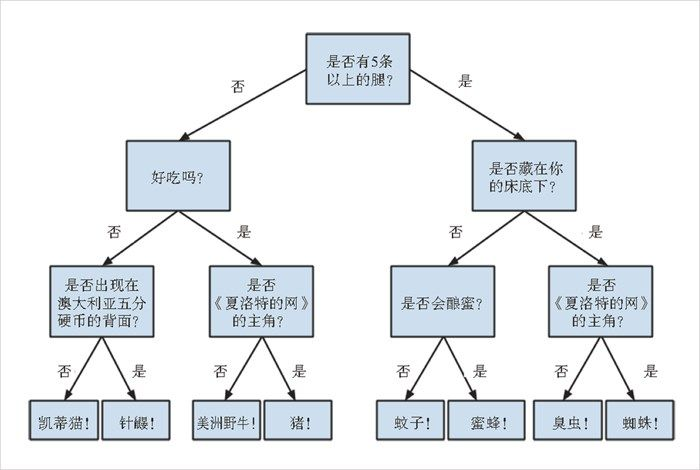

17.1 什么是决策树
决策树通过树结构来表示各种可能的决策路径 （decision path），以及每个路径的结果。
如果你之前玩过二十问（Twenty Questions，https://en.wikipedia.org/wiki/Twenty_Questions ）这个游戏的话，那么你早就熟悉决策树了，举例来说：
“我在猜一种动物。”
“它有五条以上的腿吗？”
“否。”
“好吃吗？”
“否。”
“是否出现在澳大利亚五分硬币的背面？”
“是。”
“是针鼹吗？”
“对，正是！”
下面是相应的判断路径。
“不超过 5 条腿”→“不好吃”→“出现在 5 分硬币上”→“针鼹！”这就是一棵特殊的（而不是非常宽泛的）“猜动物”的决策树，如图 17-1 所示。

图 17-1：“猜动物”决策树
决策树不仅能够提供很多建议，并且非常易于理解和解释，同时，进行推断的过程还是完全透明的。与本书前面介绍的模型不同，决策树不仅可以轻松处理混合在一起的数值属性（例如腿数）和条件属性（例如好吃 / 不好吃），甚至还可以对缺失属性的数据进行分类。
不过，要想利用一组训练数据找出“最优”决策树却是一个非常艰巨的计算问题。（考虑到计算量的问题，我们这里要建立的是一棵足够好的决策树，而非最优决策树。即便如此，当数据集变大时，计算量仍旧会面临挑战。）更重要的是，建立决策树模型时非常容易出现对训练数据的严重过拟合 现象，从而导致模型对于未曾见过的数据的效果大打折扣。关于这个问题，我们将设法加以解决。
大多数人都将决策树分为分类决策树 （classification tree，它输出的是判决结果）和回归决策树 （regression tree，它输出的是数值结果）。本章我们将重点介绍分类决策树，同时还通过 ID3 算法根据已标记的数据集来确定决策树，这将有助于我们理解决策树的实际运行机制。为简单起见，我们只探讨仅有两个输出结果的问题，如“我该不该雇用这个应聘者？”“我应该给这个网站访问者展示广告 A 还是广告 B ？”或者“吃了从办公室冰箱里发现的这些食物会不会反胃？”